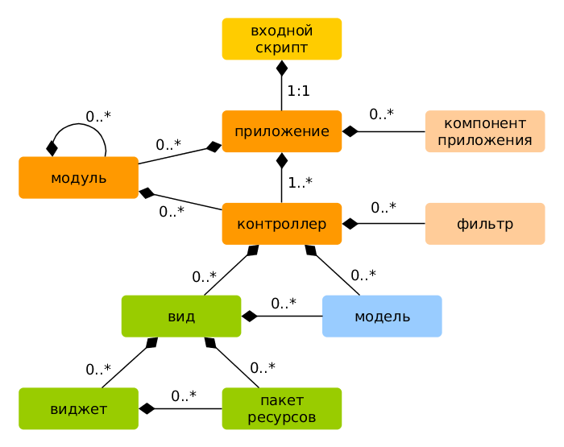
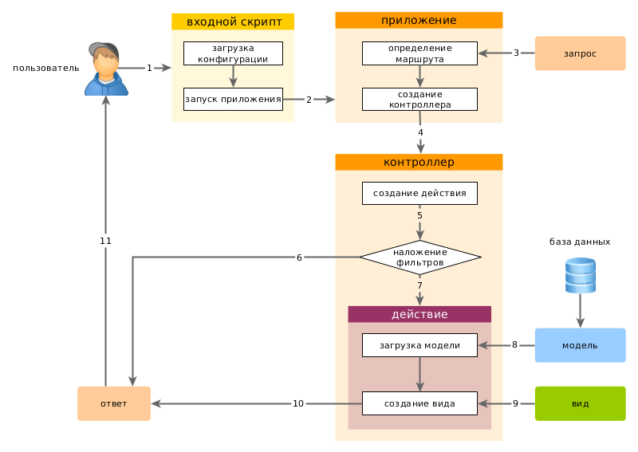

Запуск приложения ¶
После установки Yii базовое приложение будет доступно либо по URL http://hostname/basic/web/index.php, либо по http://hostname/index.php, в зависимости от настроек Web сервера. Данный раздел - общее введение в организацию кода, встроенный функционал и обработку обращений приложением Yii.
Информация: далее в данном руководстве предполагается, что Yii установлен в директорию
basic/web, которая, в свою очередь, установлена как корневой каталог в настройках Web сервера. В результате, обратившись по URLhttp://hostname/index.php, Вы получите доступ к приложению, расположенному вbasic/web. Детальнее с процессом начальной настройки можно познакомиться в разделе Установка Yii.
Отметим, что в отличие от самого фреймворка как только приложение установлено, оно становится целиком вашим. Вы можете изменять его код как угодно.
Функциональность ¶
Установленный шаблон простого приложения состоит из четырех страниц:
- домашняя страница, отображается при переходе по URL
http://hostname/index.php - страница "About" ("О нас")
- на странице "Contact" находится форма обратной связи, на которой пользователь может обратиться к разработчику по e-mail
- на странице "Login" отображается форма авторизации. Попытайтесь авторизоваться с логином/паролем "admin/admin". Обратите внимание на изменение раздела "Login" в главном меню на "Logout".
Эти страницы используют смежный хедер (шапка сайта) и футер (подвал). В "шапке" находится главное меню, при помощи которого пользователь перемещается по сайту. В "подвале" - копирайт и общая информация.
В самой нижней части окна Вы будете видеть системные сообщения Yii - журнал, отладочную информацию, сообщения об ошибках, запросы к базе данных и т.п. Выводом данной информации руководит встроенный отладчик, он записывает и отображает информацию о ходе выполнения приложения.
В дополнение к веб приложению имеется консольный скрипт с названием yii, который находится в базовой директории приложения.
Этот скрипт может быть использован для выполнения фоновых задач и обслуживания приложения. Всё это описано в разделе
Консольные команды.
Структура приложения Yii ¶
Ниже приведен список основных директорий и файлов вашего приложения (считаем, что приложение установлено в директорию basic):
basic/ корневой каталог приложения
composer.json используется Composer'ом, содержит описание приложения
config/ конфигурационные файлы
console.php конфигурация консольного приложения
web.php конфигурация Web приложения
commands/ содержит классы консольных команд
controllers/ контроллеры
models/ модели
runtime/ файлы, которые генерирует Yii во время выполнения приложения (логи, кэш и т.п.)
vendor/ содержит пакеты Composer'а и, собственно, сам фреймворк Yii
views/ виды приложения
web/ корневая директория Web приложения. Содержит файлы, доступные через Web
assets/ скрипты, используемые приложением (js, css)
index.php точка входа в приложение Yii. С него начинается выполнение приложения
yii скрипт выполнения консольного приложения Yii
В целом, приложение Yii можно разделить на две категории файлов: расположенные в basic/web и расположенные в других директориях. Первая категория доступна через Web (например, браузером), вторая не доступна извне и не должна быть доступной т.к. содержит служебную информацию.
В Yii реализован архитектурный паттерн MVC,
которая соответствует структуре директорий приложения. В директории models находятся Модели,
в views расположены Виды, а в каталоге controllers все Контроллеры приложения.
Диаграмма ниже демонстрирует внутреннее устройство приложения.

В каждом приложении Yii есть точка входа в приложение, web/index.php это единственный PHP-скрипт доступный для выполнения из Web. Он принимает входящий запрос и создает экземпляр приложения.
Приложение обрабатывает входящие запросы при помощи компонентов и отправляет запрос контроллеру. Виджеты используются в Видах для построения динамических интерфейсов сайта.
Жизненный цикл пользовательского запроса ¶
На диаграмме показано как приложение обрабатывает запрос.

- Пользователь обращается к точке входа
web/index.php. - Скрипт загружает конфигурацию configuration и создает экземпляр приложения для дальнейшей обработки запроса.
- Приложение определяет маршрут запроса при помощи компонента приложения запрос.
- Приложение создает экземпляр контроллера для выполнения запроса.
- Контроллер, в свою очередь, создает действие и накладывает на него фильтры.
- Если хотя бы один фильтр дает сбой, выполнение приложения останавливается.
- Если все фильтры пройдены - приложение выполняется.
- Действие загружает модель данных. Вероятнее всего из базы данных.
- Действие генерирует вид, отображая в нем данные (в т.ч. и полученные из модели).
- Сгенерированный вид приложения передается как компонент ответ.
- Компонент "ответ" отправляет готовый результат работы приложения браузеру пользователя.